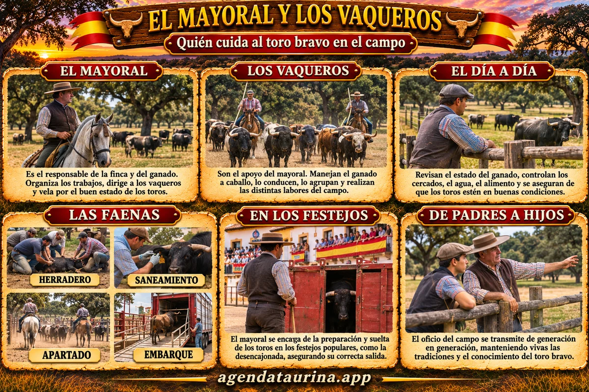

Agenda Taurina
Agenda TaurinaEl mayoral y los vaqueros: quién cuida al toro bravo en el campo
El oficio de las personas que crían, conocen y acompañan al toro desde que nace hasta el día del festejo

Ilustración de Agenda Taurina generada con IA.
Detrás de cada toro que sale a la calle en un festejo hay años de trabajo en el campo. Antes de que una peña lo elija y lo anuncie en un cartel, ese toro ha sido cuidado, vigilado y manejado a diario por un equipo de personas que viven en la dehesa y conocen a cada animal por su nombre. Son el mayoral y los vaqueros, uno de los oficios más antiguos y menos conocidos del mundo del toro.
La gente del campo bravo
En una ganadería de lidia el trabajo se reparte de forma clara:
- El ganadero es el dueño o responsable de la ganadería. Decide qué sementales y vacas se cruzan, qué toros se venden y a qué festejos van.
- El mayoral es su hombre de confianza en la finca. Organiza el trabajo diario y dirige a los vaqueros.
- Los vaqueros son quienes hacen el trabajo con el ganado, casi siempre a caballo.
En las ganaderías pequeñas, muchas veces el propio ganadero hace de mayoral, y la familia entera echa una mano en el campo.
El mayoral
El mayoral es el responsable de la finca y del ganado. Sigue las indicaciones del ganadero y se encarga de que todo funcione: que los animales estén bien alimentados, que los cercados estén en buen estado, que cada lote esté en su cercado y que las faenas se hagan a su tiempo.
Su gran valor es el conocimiento del ganado. Un buen mayoral sabe cómo es cada toro, cómo se comporta, con qué otros animales se lleva bien y cuál puede dar problemas. Por eso su opinión pesa mucho cuando el ganadero elige los toros que van a un festejo, y muchas peñas lo consultan cuando visitan la finca para escoger su toro.
Es un puesto de mucha confianza: el mayoral pasa más horas con los toros que nadie y responde de ellos ante el ganadero.
Los vaqueros
Los vaqueros son el apoyo del mayoral y quienes hacen el trabajo diario con el ganado. Su herramienta principal es el caballo: a caballo recorren la finca, vigilan las reses y las mueven de un cercado a otro sin tener que acercarse a pie, lo que sería peligroso con animales bravos.
Para guiar al ganado usan la garrocha, una vara larga de madera con la que dirigen a los animales sin hacerles daño, y se ayudan de los cabestros: reses mansas, normalmente con cencerro, que el toro bravo sigue con naturalidad. Moviendo a los cabestros, los vaqueros consiguen que los toros vayan a donde ellos quieren.
El trabajo de un vaquero exige saber montar muy bien, leer el comportamiento de los animales y mantener la calma: un movimiento brusco puede provocar una pelea entre toros o que uno se lesione.
El día a día en la finca
La jornada empieza temprano. El mayoral y los vaqueros recorren los cercados para comprobar que todos los animales están bien, que no hay ninguno herido o enfermo y que tienen agua y comida. Revisan alambradas, puertas y abrevaderos, y en las épocas secas reparten pienso o forraje.
Cada lote de animales tiene sus necesidades: las vacas con sus crías, los becerros recién destetados, los utreros y los toros que ya están preparados para salir. Mantenerlos separados y tranquilos es parte esencial del trabajo.
Las grandes faenas del campo
- Herradero: el marcado de los becerros con el hierro de la ganadería, la marca de la asociación, el número y el guarismo. Lo explicamos a fondo en nuestra guía del herradero.
- Saneamiento: las revisiones veterinarias obligatorias, en las que se comprueba la salud de los animales y se toman muestras. Requiere meter a las reses en los corrales y manejarlas con cuidado.
- Apartado: la separación de los animales por lotes, por ejemplo para preparar los toros que irán a un festejo.
- Tentadero: la prueba de las vacas y los sementales en la placita de la finca para valorar su bravura y decidir cuáles serán madres o padres de las próximas camadas.
- Embarque: la carga de los toros en los cajones o en el camión para llevarlos al festejo.
El mayoral en los festejos populares
Para los aficionados a los festejos populares, el trabajo del mayoral se ve sobre todo el día del toro. Antes del festejo, él y los vaqueros se encargan del embarque: meter al toro en el cajón sin que se lesione es una de las tareas más delicadas.
Muchas veces el mayoral viaja con el toro hasta el pueblo y está presente en la desencajonada, cuidando de que el animal salga en buenas condiciones. Durante la prueba y la embolada está pendiente de su estado, y al terminar se ocupa de volver a encajonarlo y de su regreso a la finca. Para él, cada toro que sale de su campo es también un poco suyo.
Por eso es habitual que las peñas agradezcan públicamente al ganadero y al mayoral el trato del toro, y que muchos aficionados conozcan por su nombre a los mayorales de las ganaderías de su comarca.
Un oficio que pasa de padres a hijos
El oficio de mayoral y de vaquero no se aprende en ningún libro. Se aprende en el campo, a caballo y al lado de los mayores. Hay familias que llevan varias generaciones trabajando en la misma ganadería, y padres que enseñan a sus hijos a reconocer a un toro por su forma de moverse o a saber cuándo un animal está nervioso.
Ese saber, transmitido de generación en generación, es una parte fundamental de la cultura del toro bravo y de los festejos populares que tanto disfrutamos.
¿Quieres saber más sobre el toro bravo? Mira nuestras guías de qué es un toro cerril, capas o pelajes y particularidades.
Guía elaborada por Agenda Taurina sobre el trabajo habitual en las ganaderías de lidia.
Ver el calendario completo Ver todas las noticias